Karte mit Kachelraster aus Basisdiagramm
Tile-Grid-Map
Zusammenfassung
Dieses Tutorial zeigt Ihnen, wie Sie eine Karte mit Kachelraster aus einem Basisdiagramm erstellen.
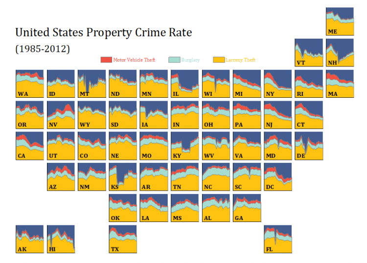
Dies ist eine Karte mit Kachelraster der USA für die Rate der Eigentumsdelikte der einzelnen Bundesstaaten. Jede Kachel wird auf Grundlage eines Basisdiagramms erstellt und stellt einen einzelnen Bundesstaat dar.
Was Sie lernen werden
Dieses Tutorial zeigt Ihnen, wie Sie:
- ein Basisdiagramm vorbereiten,
- eine Karte mit Kachelraster aus Basisdiagramm erstellen,
- die Anordnungsdaten der Kacheln ermitteln.
Schritte
Dieses Tutorial ist mit dem Beispielprojekt "Maps - Tile Grid Map for US Crime Rate" verbunden, das Sie im Lernzentrum finden (im Menü Hilfe: Lernzentrum wählen oder die Taste F11 drücken), indem Sie nach dem Stichwort "Karte mit Kachelraster" suchen.
- Suchen und öffnen Sie das Beispielprojekt im Lernzentrum.
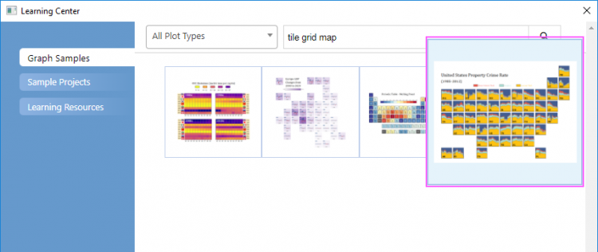
- Aktivieren Sie die Arbeitsmappe. Im Blatt "PlotData" sind die Zeichnungsdaten aller Bundesstaaten seitlich nebeneinander angeordnet zum Zeichnen der Kacheln. Die zwei der Spaltenbeschriftungszeilen "Column" und "Row" speichern die Griddingdaten für Spalte-Zeile zum Anordnen der Kacheln. Die Spaltenzeile "postal" enthält die Identifizierer der Bundesstaaten.

Ein Basisdiagramm vorbereiten
- Markieren Sie die Spalten col(B)~col(D) und wählen Sie Zeichnen > Balken, Kreis, Fläche: Gestapelte Fläche im Menü, um ein gestapeltes Flächendiagramm zu zeichnen.
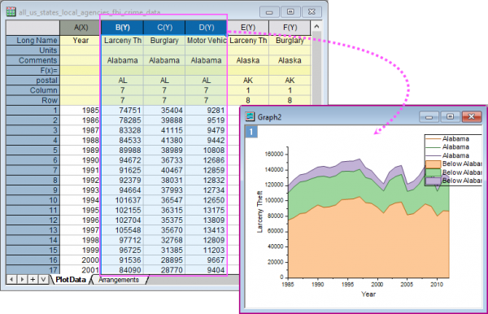
- Entfernen Sie das Legendenfeld, verbergen Sie die Hilfsstriche und Hilfsstrichsbeschriftungen für die X- und Y-Achse, zeigen Sie den Layerrahmen, füllen Sie den Layerhintergrund mit einer gewünschten Farbe und ändern Sie die Flächenfarbe mit einer vordefinierten Farbliste.
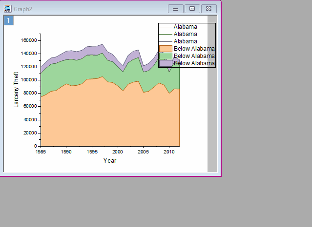
- Das Basisdiagramm ist fertig.

Eine Karte mit Kachelraster aus Basisdiagramm erstellen
- Aktivieren Sie die Quellarbeitsmappe. Markieren Sie alle Spalten im Blatt "PlotData" und wählen Sie Zeichnen > Karte: Karte mit Kachelraster, um den Dialog plottilemap zu öffnen.
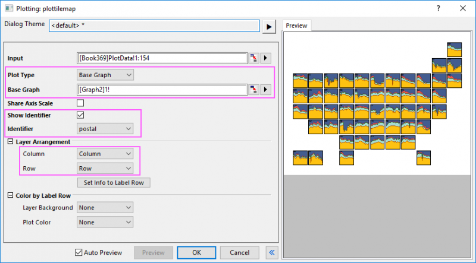
- In diesem Dialog:
- Wählen Sie Basisdiagramm als Diagrammtyp. Klicken Sie dann auf die Schaltfläche Diagramm auswählen am Ende des Felds Basisdiagramm, um das soeben erstellte Basisdiagramm zu wählen.
- Aktivieren Sie das Kontrollkästchen Identifizierer zeigen und wählen Sie dann postal als Identifizierer.
- Wählen Sie die Beschriftungszeilen "Column" und "Row" in der Auswahlliste Spalte bzw. Zeile.
- Klicken Sie auf OK, um die Karte mit Kachelraster zu erstellen. Wenn Sie in der Karte mit Kachelraster eine Kachel benutzerdefiniert anpassen, werden alle Kacheln zusammen aktualisiert. Verschieben Sie eine Beschriftung und ändern Sie ihre Schriftgröße.

Anordnungsdaten erhalten
Im Beispielprojekt wurden die Griddingdaten gut in den Spaltenbeschriftungszeilen angeordnet. Sie können ganz einfach im Dialog plottilemap auf sie zugreifen. Wenn Sie solche Spaltenbeschriftungszeilen nicht haben, können Sie, abgesehen von der manuellen Eingabe dieser Werte in die Zellen, die folgende Methode verwenden, um sie zu erhalten.
- Zuerst müssen Sie eine Tabelle vorbereiten, um zu zeigen, wie die Kacheln nach dem Spalten-Zeilen-Gridding angeordnet werden sollen.
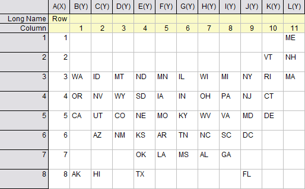
- Sie können die Tabelle manuell erstellen und den Griddingindex für Spalte-Zeile verwenden, um die Kacheln zu positionieren.
- Für das aktuelle Beispieldiagramm wurde bereits eine Online-Vorlage bereitgestellt, damit Sie die Anordnungstabelle herunterladen können.
- Wählen Sie Zeichnen > Vorlagencenter im Menü, um das Vorlagencenter zu öffnen. Wählen Sie in diesem Dialog "Mappe" für Vorlagentyp und suchen Sie nach dem Stichwort "Kachel", um die Vorlage "Gitternetzanordnungen für Karte mit Kachelraster" zu finden. Klicken Sie auf die Schaltfläche Download and Install, um die Vorlage zu installieren.
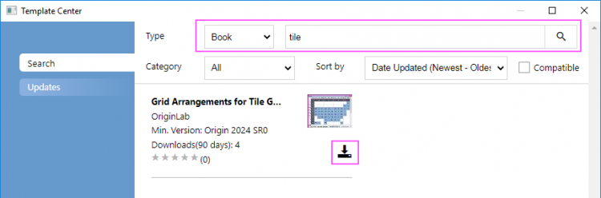
- Schließen Sie das Vorlagencenter und wählen Sie dann im Menü Datei: Neu: Arbeitsmappe: Navigieren, um den Dialog Neue Mappe aufzurufen. Wählen Sie die Vorlage "Gitternetzanordnungen für Karte mit Kachelraster" und klicken Sie auf die Schaltfläche Öffnen, um sie zu öffnen.
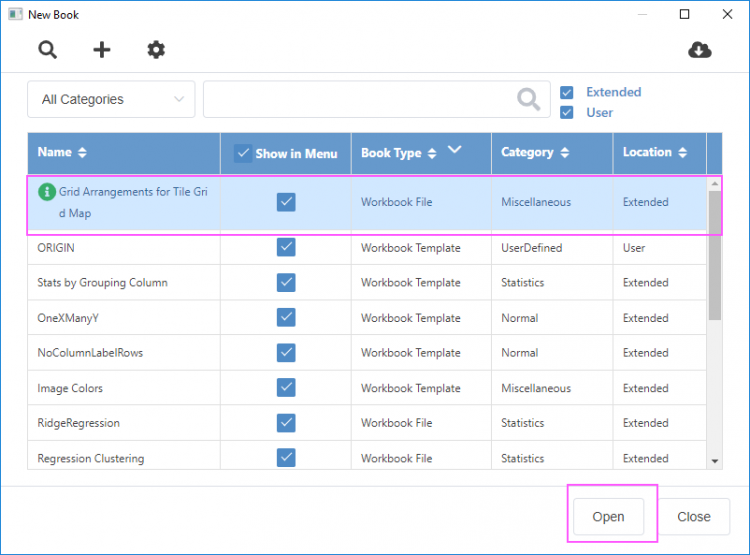
- Schließen Sie den Dialog Neue Mappe. Gehen Sie zum Blatt "United States_Arrangement". Sie sehen die Anordnungsdaten des Gitternetzes für die US-Bundesstaaten.
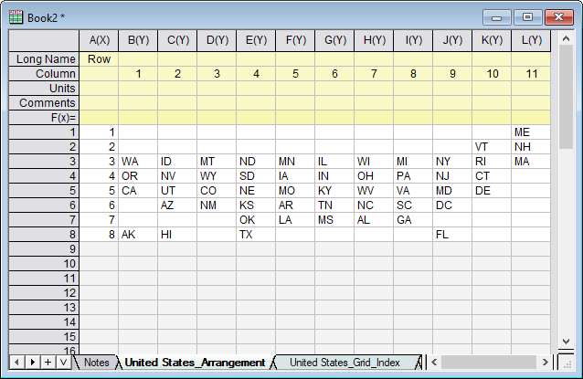
- Sie können die Position der Staatencodes zurücksetzen, um die Kachelanordnung, falls notwendig, zu ändern.
- Sie erhalten die Gitternetzkoordinaten für alle Bundesstaaten. Markieren Sie die Spalten B~L im Blatt und wählen Sie Restrukturieren: Spalten stapeln im Menü, um den Dialog Spalten stapeln zu öffnen.
- Wählen Sie die Beschriftungszeile "Column" als Gruppenzeile(n). Aktivieren Sie das Kontrollkästchen Andere Spalte(n) einschließen und wählen Sie col(A). Aktivieren Sie das Kontrollkästchen Fehlende Zeilen ausschließen. Geben Sie "StateCode" im Feld Langname der Datenspalte ein.
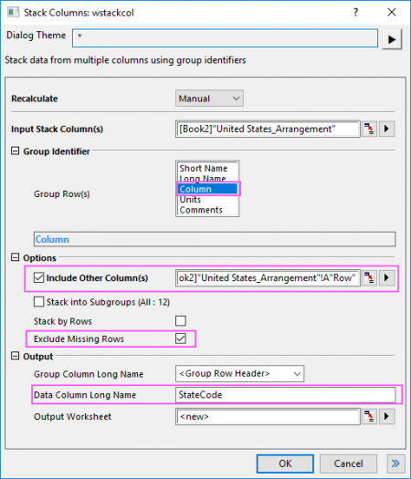
- Klicken Sie auf OK. Es wird ein neues Blatt erstellt, entsprechend dem Arbeitsblatt "United States_Grid_Index".
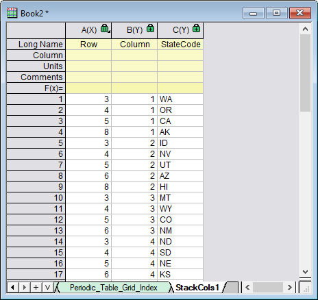
Daten der Anordnungsspalte beim Zeichnen einer Karte mit Kachelraster verwenden
Wenn Sie diese drei Spalten oben haben, können Sie sie verwenden, um die Kacheln bei den festgelegten Positionen zu zeichnen.
- Kopieren Sie dieses Blatt in die Quellarbeitsmappe "all_us_states_local_agencies_fbi_crime_data".
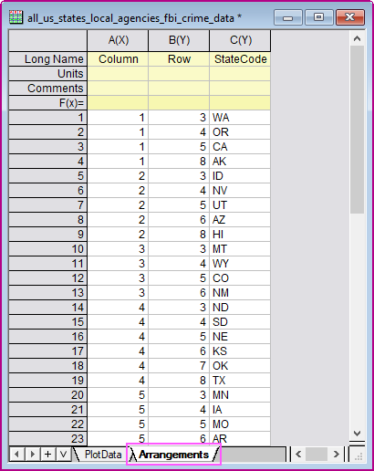
- Hinweis: Das Blatt "Arrangements" wurde bereits mit den Daten der Anordnungsspalte im Beispielprojekt erstellt.
- Das Basisdiagramm wurde bereits im Voraus vorbereitet. Markieren Sie nun alle Spalten im Blatt "PlotData", um Zeichnen > Karte: Karte mit Kachelraster auszuwählen und den Dialog plottilemap zu öffnen. Wählen Sie Basisdiagramm als Diagrammtyp und dann das von Ihnen vorbereitete Basisdiagramm. Aktivieren Sie das Kontrollkästchen Identifizierer und wählen Sie "postal" für Identifizierer.
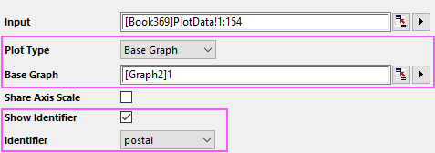
- Klicken Sie auf die Schaltfläche Info aus Beschriftungszeile setzen, um die Daten der Anordnungsspalte auszuwählen, sie in Spaltenbeschriftungszeilen umzuwandeln und in das Quellarbeitsblatt "PlotData" einzufügen.

- Wie Sie erkennen können, wurden die Anordnungsdaten umgewandelt und mit den Zeichnungsdaten in das Quellarbeitsblatt eingefügt. Sie werden automatisch in der Gruppe Layeranordnung des Dialogs plottilemap ausgewählt.